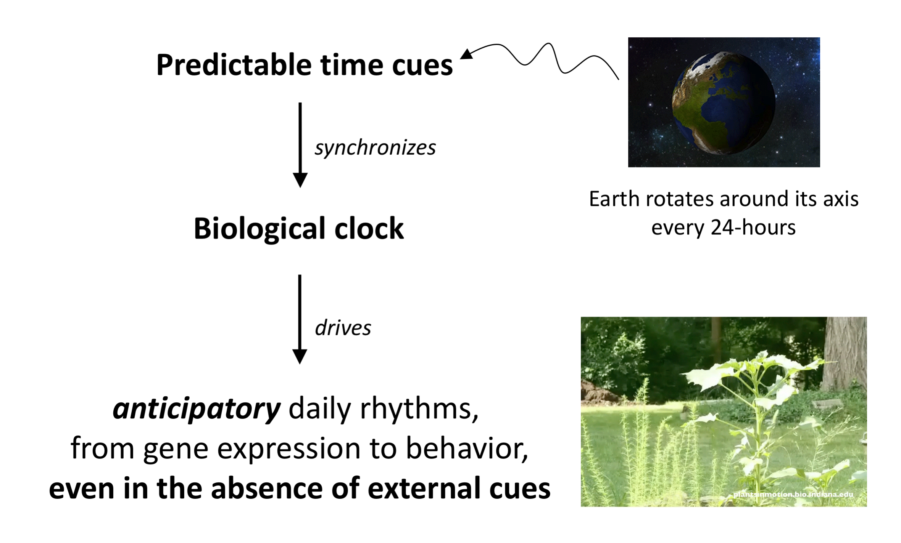
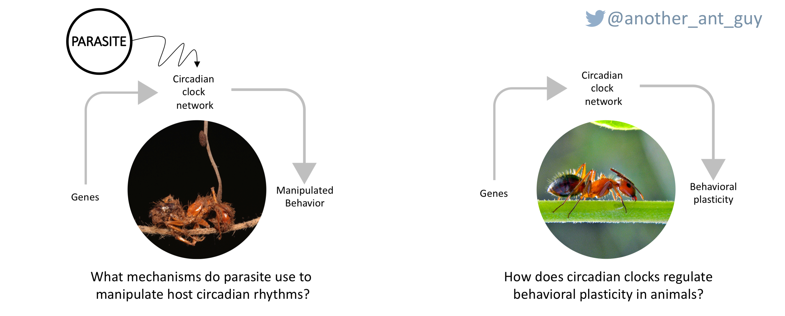
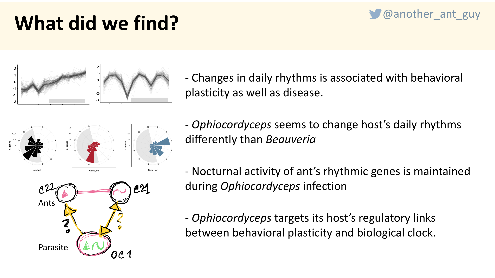
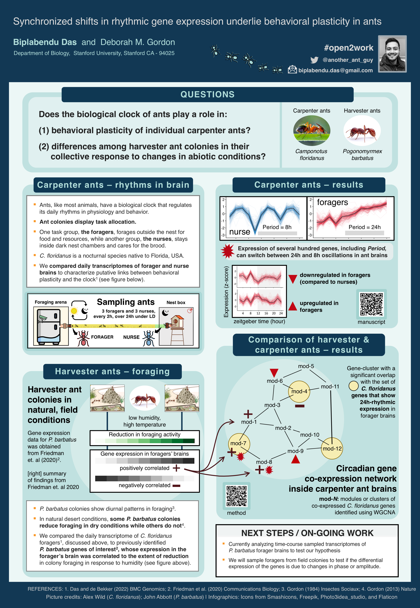
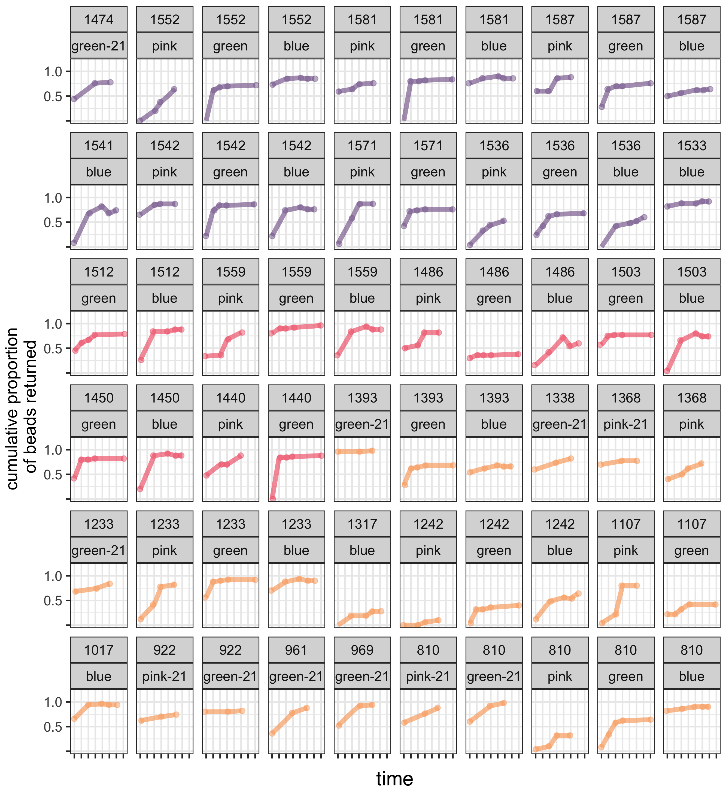

Animals exhibit daily rhythms in physiology and behavior, anticipating predictable fluctuations in their environment. Behavioral rhythms are “flexible” since the phase, amplitude, and period can change throughout an animal’s life.

Ants, like most animals, have a biological clock that regulates daily rhythms in physiology and behavior. Both colonies of the carpenter ant Camponotus floridanus and the seed-harvester ant Pogonomyrmex barbatus have one reproductive queen and thousands of non-reproductive worker ants that perform most of the tasks. One task group of workers forages outside the nest for food and resources, while another group, the nurses, stays inside dark nest chambers and cares for the brood (eggs, larvae, and pupa). The task identity of an ant is plastic, changing with age (nurses are young and foragers older individuals in the colony) and colony needs (increased demand for foraging induces precocious nurse-to-forager transition and vice-versa).
We examined the role of the biological clock in regulating the plasticity of behavioral states of individual Camponotus floridanus ants within a colony. The expression of several genes, including Period and Shaggy, involved in transcriptional regulation, phosphorylation, and GPCR-mediated signal transduction oscillate every 24h in foragers’ brains but every 8h in nurses. Therefore, different rhythms of core clock and clock-controlled gene expression in the ant brain are associated with distinct behavioral states.
I study how the biological clock regulates behavioral plasticity in social organisms, and how such plasticity can be targeted by parasites.

Left: Camponotus floridanus cadaver, killed by the fungal parasite Ophiocordyceps camponoti-floridani.
Right: A worker of Camponotus floridanus. Photo source: Fullbright-AustraliaWhile clock-controlled behavioral plasticity is crucial to a species’ survival and fitness, it has also been hypothesized to be a conserved target for several manipulative parasites that induce timely changes to host behavior in order to maximize growth and transmission.
During my Phd, I studied the Florida carpenter ant Camponotus floridanus, and its specialized Ophiocordyceps fungi, to explore questions at the intersection of sociobiology, chronobiology, and parasitology by combining controlled behavioral experiments with time-course transcriptomics. The major take-home messages from my dissertation are shown below.

Relevent publications:
Das and de Bekker 2022, de Bekker and Das 2023, Das et al. 2023a, Das et al. 2023b
Do biological clocks play an ecological function in harvester ants?
Harvester ant colonies show daily temporal patterns in foraging. In the desert-living harvester ant, Pogonomyrmex barbatus, colonies differ consistently in how they regulate foraging in response to low humidity in natural desert conditions; some Pogonomyrmex barbatus colonies reduce foraging in dry conditions while others do not.
We examined the role of the biological clock in regulating the differences among Pogonomyrmex barbatus colonies in their collective response to day-to-day changes in humidity conditions.

We compared the daily transcriptome of C. floridanus foragers, discussed above, to previously identified P. barbatus genes of interest, whose expression in the forager’s brain was correlated to the extent of reduction in colony foraging in response to humidity. Intriguingly, P. barbatus genes of interest significantly overlap with C. floridanus genes whose expression oscillates at different periodicity; 24h in foragers’ brains and 8h in nurses.
Our preliminary findings suggest that the same rhythmic genes and pathways associated with the plasticity of behavioral states in individual C. floridanus ants also underlie consistent differences among P. barbatus colonies in their response to dry and hot conditions, a phenotypic variation that natural selection can act on.
ANALYSES OF TIME-COURSE RNASeq DATA FROM HARVESTER ANTS - ONGOING
Relevant publications:
Das and de Bekker 2022, de Bekker and Das 2023, Friedman et al. 2020, manuscript in prep
In Pogonomyrmex barbatus, the red harvester ants, one task group of workers, the foragers, forages for seeds while another task group, the nest maintenance workers, takes out refuse such as husks.
In natural, field conditions, we examined the relation between temporal patterns in allocating colony effort towards foraging and waste removal.
In a field study of 39 identified colonies at a long-term study site, conducted in two successive summers, we provided plastic seed mimics that foragers collected and monitored the rate at which nest maintenance workers removed them as refuse.

The preliminary findings from our analyses show that:
DATA ANALYSES - ONGOING
Relevant publications:
Gordon 2013, manuscript in prep